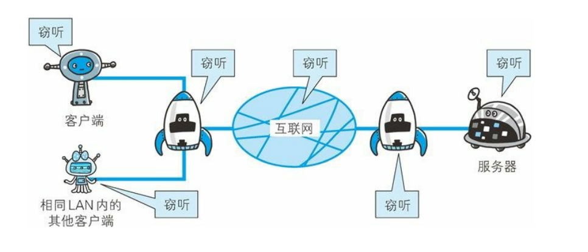
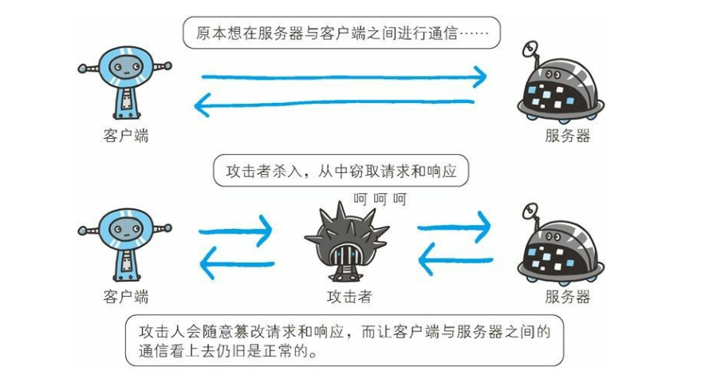
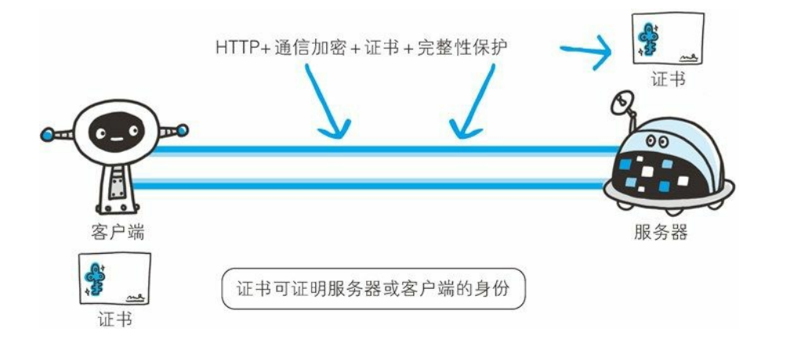
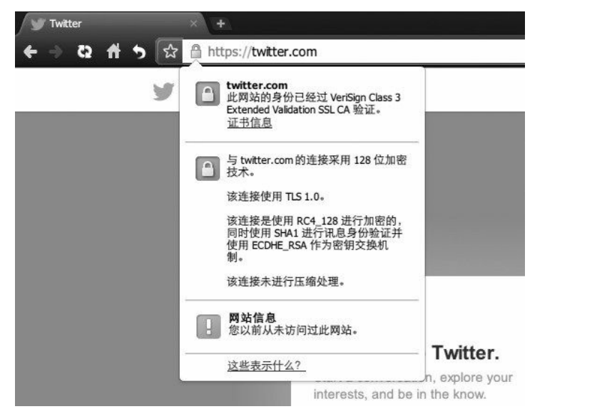

一、HTTP的缺点
- 通信使用明文传输（不加密），内容可能会被窃听。
- 不验证通信方的身份，因此可能遭遇伪装。
- 无法证明报文的完整性，所以有可能已经遭遇篡改。
这些问题不仅在HTTP上出现，其它未经加密的协议种也会存在这类问题。除此之外，HTTP本身还有很多缺点，而且，还有像某些特定的Web服务器和特定的Web浏览器在实际应用种存在的不足（也可以说成是脆弱性或安全漏洞），另外，用Java和PHP等编程语言开发的Web应用也可能存在安全漏洞。
1、通信使用明文可能会被窃听
由于HTTP本身不具备加密的功能，所以也无法做到对通信整体（使用HTTP协议通信的请求和响应的内容）进行加密，即：HTTP报文使用明文（指未经加密过的报文）方式发送。
（1）TCP/IP是可能被窃听的网络
如果要问为什么通信时不加密是一个缺点，这是因为，按TCP/IP协议族的工作机制，通信内容在所有的通信线路上都有可能遭遇窥视。所谓互联网，是由能联通到全世界的网络组成的，无论世界上哪一个角落的服务器在和客户端进行通信时，在此通信线路上的某些网络设备、光缆、计算机等都不可能时个人的私有物，所以不排除某个环节遭到恶意窥视行为。
即使是已经加密处理的通信，也会被窥视到通信内容，这点和未加密的通信是相同的。只是说如果通信经过加密，就有可能让人无法看到破解报文信息的含义，但加密处理后的报文信息本身还是会被看到的。

窃听相同段上的通信并非难事，只需要收集在互联网上流动的数据包（帧）就可以。对于收集来的数据包的解析工作，可以交给那些抓包（Packet Capture）或嗅探器（Sniffer）工具。
（2）加密处理防止被窃听
在目前大家正在研究的如何防止窃听保护信息的几种对策种，最普及的就是加密技术，加密的对象可以有这么几个。
1）通信的加密
一种方式就是将通信加密。HTTP协议种没有加密机制，但可以通过和SSL（Secure Socket Layer，安全套接层）或TLS（Transport Layer Security，安全层传输协议）的组合使用，加密HTTP的通信内容。
用SSL建立安全通信线路后，就可以在这条线路上进行HTTP通信了。与SSL组合使用的HTTP被称为HTTPS（HTTP Secure，超文本传输安全协议）或HTTPS over SSL。

2）内容的加密
还有一种将参与通信的内容本身加密的方式。由于HTTP协议种没有加密机制，那么就对HTTP协议传输的内容本身进行加密。即把HTTP报文里所含的内容跟进行加密处理。
在这种情况下，客户端要对HTTP报文进行加密处理后再发送请求。

诚然，为了做到有效的内容加密，前提是要求客户端和服务器同时具备加密和解密机制，主要应用在Web服务种。有一点必须引起注意，由于该方式不同于SSL或TLS将整个通信线路进行加密处理，所以内容仍然有被篡改的风险。
2、不验证通信方的身份就可能遭遇伪装
HTTP协议种的请求和响应不会对通信方进行确认，也就是说存在“服务器是否就是发送请求种URI真正指定的主机，返回的响应是否真的返回到实际提出请求的客户端”等类似问题。
（1）任何人可以发起请求
在HTTP协议通信时，由于不存在确认通信方的处理步骤，任何人都可以发起请求。另外，服务器只要接收到请求，不管对方是谁都会返回一个响应（但也仅限于发送端的IP地址和端口号没有被Web服务器设定限制访问的前提下）。

HTTP协议的实现本身非常简单，不论是谁发送过来的请求都会返回响应，因此不确认通信方，会存在以下各种隐患。
- 无法确定请求发送至目标的Web服务器是否是按照真实意图返回响应的那台服务器。有可能是已经伪装的Web服务器。
- 无法确定响应返回到的那台客户端是否是按真实意图接收响应的那个客户端。有可能是已经伪装的客户端。
- 无法确定正在通信的对方是否具备访问权限。因为某些Web服务器上保存着重要的信息，只想发给特定用户通信的权限。
- 无法判定请求是来自何方、出自谁手。
- 即使是无意义的请求也会照单全收。无法阻止海量请求下的Dos（Denial of Service，拒绝服务攻击）。
（2）查明对手的证书
虽然使用HTTP协议无法确认通信方，但是如果使用SSL则可以，SSL不仅提供加密处理，而且还使用了一种被称为证书的手段，可用于确定方。
证书由值得信任的第三方机构颁发，用以证明服务器和客户端是实际存在的。另外，伪造证书从技术角度说是异常困难的一件事。所以只要能够确认通信方（服务器或客户端）持有的证书，即可判断通信方的真实意图。

通过使用证书，以证明通信方就是意料中的服务器，这对使用者个人来讲，也减少了个人信息泄露的危险性。
另外，客户端持有证书即可完成个人身份的确认，也可用于对Web网站的认证环节。
3、无法证明报文完整性，可能已遭篡改
所谓完整性是指信息的准确度，若无法证明其完整性，通常也就意味着无法判断信息是否准确。
（1）接收到的内容可能有误
由于HTTP协议无法证明通信报文的完整性，因此，在请求或响应送出之后直到对方接收之前的这段时间内，即使请求或响应的内容遭到篡改，也没有办法获悉。
换句话说，没有任何办法确认，发送的请求/响应和接收到的请求/响应是前后相同的。

比如，从某个 Web 网站上下载内容，是无法确定客户端下载文件和服务器上存放的文件是否前后一致的。文件内容在传输途中可能已经被篡改为其他的内容。即使内容真的已改变，作为接收方的客户端也是觉察不到的。像这样，请求或响应在传输途中，遭攻击者拦截并篡改内容的攻击称为中间人攻击（Man-in-the-Middle attack，MITM）。

（2）如何防止篡改
虽然有使用 HTTP 协议确定报文完整性的方法，但事实上并不便捷、可靠。其中常用的是 MD5 和 SHA-1 等散列值校验的方法，以及用来确认文件的数字签名方法。

提供文件下载服务的 Web 网站也会提供相应的以 PGP（PrettyGood Privacy，完美隐私）创建的数字签名及 MD5 算法生成的散列值。PGP 是用来证明创建文件的数字签名，MD5 是由单向函数生成的散列值。不论使用哪一种方法，都需要操纵客户端的用户本人亲自检查验证下载的文件是否就是原来服务器上的文件。浏览器无法自动帮用户检查。可惜的是，用这些方法也依然无法百分百保证确认结果正确。因为 PGP 和 MD5 本身被改写的话，用户是没有办法意识到的。为了有效防止这些弊端，有必要使用 HTTPS。SSL提供认证和加密处理及摘要功能。仅靠 HTTP 确保完整性是非常困难的，因此通过和其他协议组合使用来实现这个目标。下节我们介绍HTTPS 的相关内容。
二、HTTP+ 加密 + 认证 + 完整性保护 = HTTPS
如果在 HTTP 协议通信过程中使用未经加密的明文，比如在 Web 页面中输入信用卡号，如果这条通信线路遭到窃听，那么信用卡号就暴露了。另外，对于 HTTP 来说，服务器也好，客户端也好，都是没有办法确认通信方的。因为很有可能并不是和原本预想的通信方在实际通信。并且还需要考虑到接收到的报文在通信途中已经遭到篡改这一可能性。为了统一解决上述这些问题，需要在 HTTP 上再加入加密处理和认证等机制。我们把添加了加密及认证机制的 HTTP 称为 HTTPS（HTTPSecure）。

经常会在 Web 的登录页面和购物结算界面等使用 HTTPS 通信。使用HTTPS 通信时，不再用 http://，而是改用 https://。另外，当浏览器访问 HTTPS 通信有效的 Web 网站时，浏览器的地址栏内会出现一个带锁的标记。对 HTTPS 的显示方式会因浏览器的不同而有所改变。

1、HTTPS是身披外壳的HTTP
HTTPS 并非是应用层的一种新协议。只是 HTTP 通信接口部分用SSL（Secure Socket Layer）和 TLS（Transport Layer Security）协议代替而已。
通常，HTTP 直接和 TCP 通信。当使用 SSL时，则演变成先和 SSL通信，再由 SSL和 TCP 通信了。简言之，所谓 HTTPS，其实就是身披SSL协议这层外壳的 HTTP。

在采用 SSL后，HTTP 就拥有了 HTTPS 的加密、证书和完整性保护这些功能。
SSL是独立于 HTTP 的协议，所以不光是 HTTP 协议，其他运行在应用层的 SMTP 和 Telnet 等协议均可配合 SSL协议使用。可以说 SSL是当今世界上应用最为广泛的网络安全技术。
2、HTTPS的加密
（1）对称密钥加密
对称密钥加密（Symmetric-Key Encryption），加密和解密使用同一密钥。
- 优点：运算速度快；
- 缺点：无法安全地将密钥传输给通信方。

（2）非对称密钥加密
非对称密钥加密，又称公开密钥加密（Public-Key Encryption），加密和解密使用不同的密钥。
公开密钥所有人都可以获得，通信发送方获得接收方的公开密钥之后，就可以使用公开密钥进行加密，接收方收到通信内容后使用私有密钥解密。
非对称密钥除了用来加密，还可以用来进行签名。因为私有密钥无法被其他人获取，因此通信发送方使用其私有密钥进行签名，通信接收方使用发送方的公开密钥对签名进行解密，就能判断这个签名是否正确。
- 优点：可以更安全地将公开密钥传输给通信发送方；
- 缺点：运算速度慢。

（3）HTTPS采用的加密方式
HTTPS 采用混合的加密机制，使用非对称密钥加密用于传输对称密钥来保证传输过程的安全性，之后使用对称密钥加密进行通信来保证通信过程的效率。（下图中的 Session Key 就是对称密钥）

3、认证
通过使用 证书 来对通信方进行认证。
数字证书认证机构（CA，Certificate Authority）是客户端与服务器双方都可信赖的第三方机构。
服务器的运营人员向 CA 提出公开密钥的申请，CA 在判明提出申请者的身份之后，会对已申请的公开密钥做数字签名，然后分配这个已签名的公开密钥，并将该公开密钥放入公开密钥证书后绑定在一起。
进行 HTTPS 通信时，服务器会把证书发送给客户端。客户端取得其中的公开密钥之后，先使用数字签名进行验证，如果验证通过，就可以开始通信了。

4、完整性保护
SSL 提供报文摘要功能来进行完整性保护。
HTTP 也提供了 MD5 报文摘要功能，但不是安全的。例如报文内容被篡改之后，同时重新计算 MD5 的值，通信接收方是无法意识到发生了篡改。
HTTPS 的报文摘要功能之所以安全，是因为它结合了加密和认证这两个操作。试想一下，加密之后的报文，遭到篡改之后，也很难重新计算报文摘要，因为无法轻易获取明文。
5、HTTPS的缺点
- 因为需要进行加密解密等过程，因此速度会更慢；
- 需要支付证书授权的高额费用。